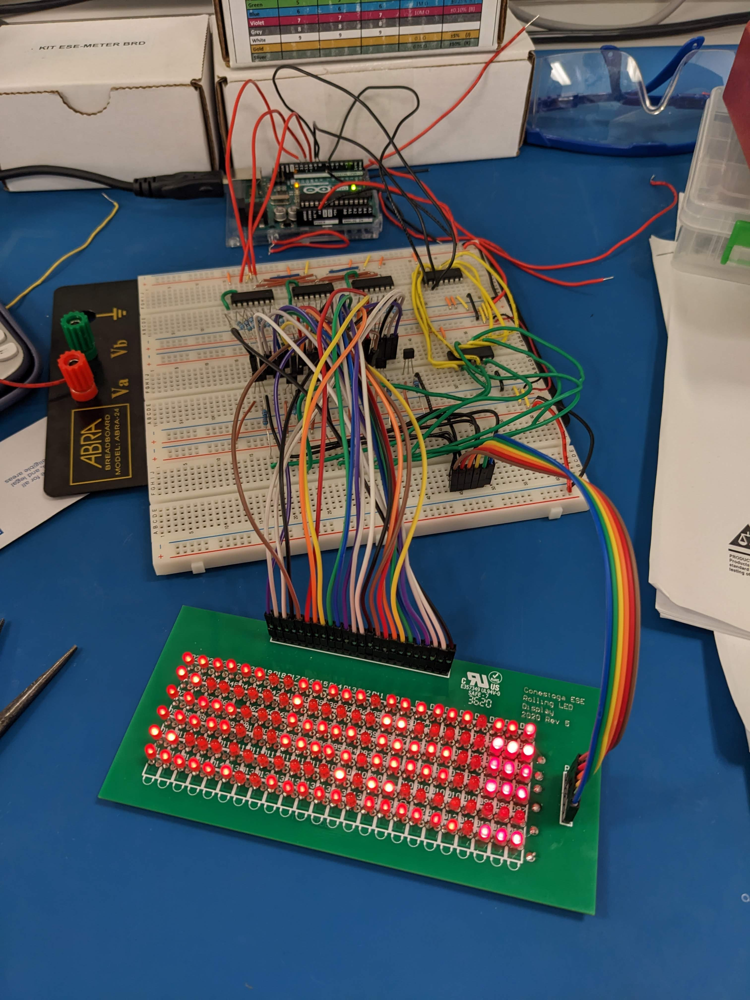
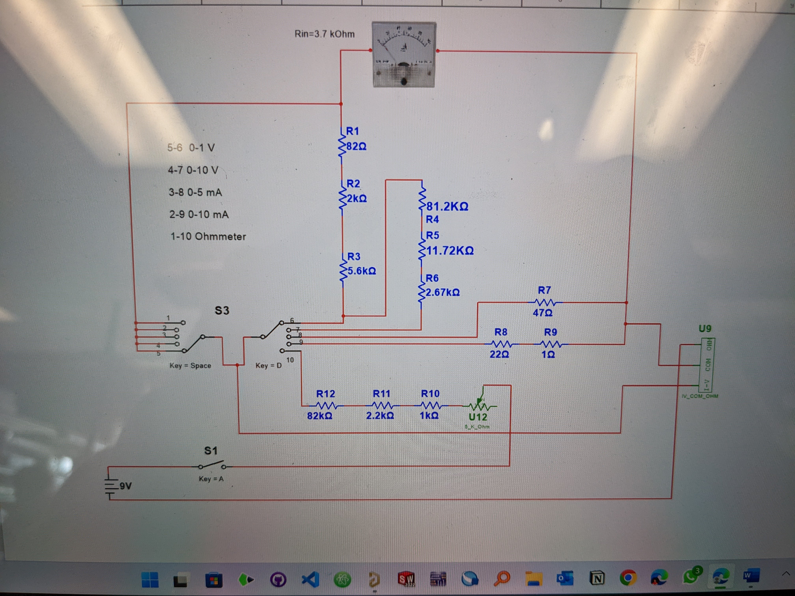
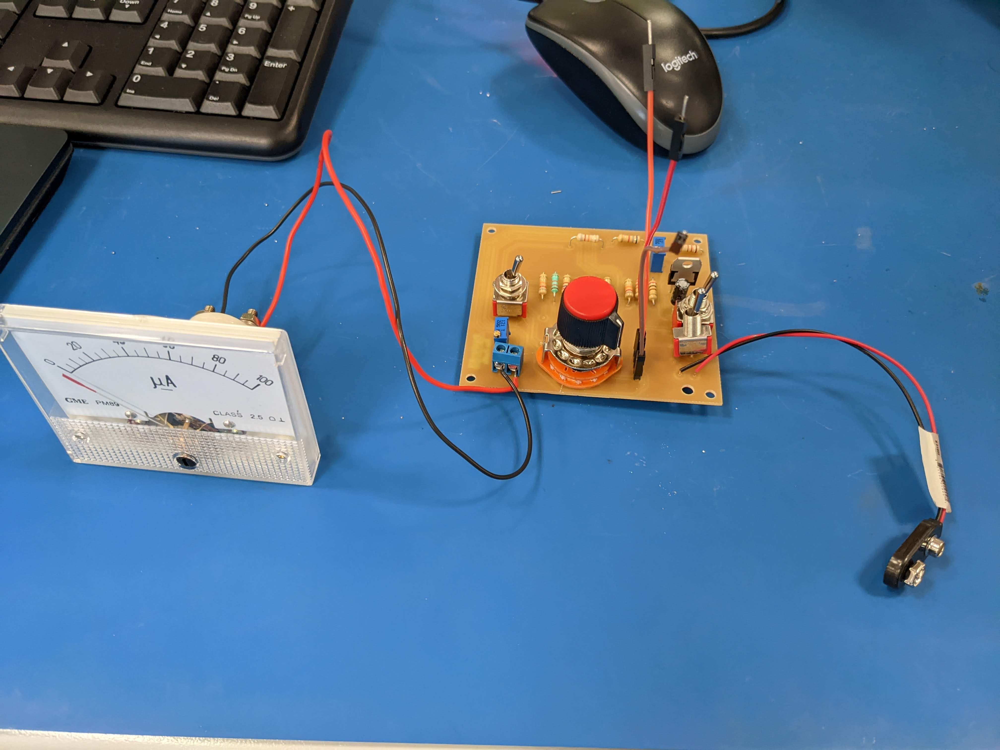

Welcome!
Hello! I’m Arbab Khan, an Electronics Systems Engineering student passionate about the intersection of electrical and software systems, especially in the automotive industry.
Explore my projects, work experience, and feel free to get in touch!
Want to connect?:
About Arbab
Arbab Khan is an Electronics Systems Engineering student who enjoys working with both hardware and software—especially when they come together in cool ways, like in cars.
He’s built things like a Rolling LED Display, a Snake game in C, and a Line Following Robot—all great chances to get hands-on with code and real-time logic.
Arbab has experience with C programming, PCB design in Altium, and 3D modeling in SolidWorks. He’s also worked on team projects, including a stint on an FSAE team, where he learned a lot by solving problems under pressure.
In his free time, you’ll find him playing around with JavaScript, exploring new tech, or geeking out over Formula 1—especially the engineering behind it.
He’s always up for learning, building, and connecting with others who love tech and cars as much as he does.
Projects
Rolling LED Display:
Planned and developed a 6x24 Matrix LED display for dynamic message distribution. Implemented brightness and temperature sensors to customize messages based on ambient conditions. The primary objective was to showcase personalized notifications on the scrolling LED display. The project spanned four months, and the real-world applications of rolling LEDs found relevance in transit hubs.
D'Arsonval Multimeter:
Constructed a functional multimeter using a D'Arsonval movement meter and resistors. Applied theoretical concepts: Ohm's Law, Kirchhoff's Voltage Law (KVL), and Kirchhoff' Current Law (KCL). Created and combined individual circuits involving diverse components. Utilized the multimeter circuit measurements. Completed PCB design and implemented the D’Arsonval movement meter on PCB. Utilized drawings before CAD (Solidworks) finalization. Designed a Cube SAT case using CAD (Solidworks). Executed metal fabrication for the Cube SAT serving as an outer shell for the multimeter.
 Line Following Robot:
Created a line-following robot featuring a 16-bit microcontroller for sensor and wheel control. Programmed the robot using the C language, facilitated by a pickit3 for data transfer to the microcontroller. Implemented a quadruple high-current half-H driver for bidirectional drive currents, suitable for applications like Half-H and Full-H Solenoids up to 1A at voltages ranging from 4.5 V to 36 V. Incorporated photo resistors for effective line following.
Work Experience
110KV Underground Cable Installation – SONDUS Substation, Jeddah
Client: National Grid SA | Contractor: Al Ojaimi
Contracting Co.
Role: Co-op Student (Engineering Assistant) |
Duration: 2 Months
During my co-op placement at Al Ojaimi Contracting Co., I contributed to a National Grid SA project involving the installation of underground cables connecting the SAMER step-up substation and the SONDUS step-down substation. This project was key to improving grid reliability and efficient power transmission between high voltage and distribution systems.
Key Contributions (under the guidance of a senior engineer/supervisor):
- Reviewed technical design documents and fiber optic cabling standards including UGNFOC and OPGW.
- Participated in cable route planning, drawing verification, and field measurements.
- Supported site activities such as trenching, conduit installation, and grounding under engineering supervision.
- Ensured compliance with National Grid SA's cybersecurity protocols, QA/QC standards, and installation guidelines.
Apex Canine Training Academy (Part-Time)
Worked as a videographer and video editor, producing short-form content tailored to company standards. Managed full production flow using Adobe Premiere Pro. Designed and built the company’s website using Webflow, aligning the layout and functionality with brand goals over a 4-month period.
FSAE Team – Electrical Division
Contributed to the battery management system and motor controller logic of a Formula Student electric race car. Gained hands-on experience with PCB design, sensor calibration, and collaborative debugging within a fast-paced engineering team. Worked for 4 months on practical vehicle systems integration.
Founder & President — Comic Club
High School
- Founded and led the school’s first Comic Club, creating a space for comic art enthusiasts.
- Organized weekly meetings, workshops, and comic storytelling events.
- Collaborated with faculty to host exhibitions and contests, boosting engagement and membership.